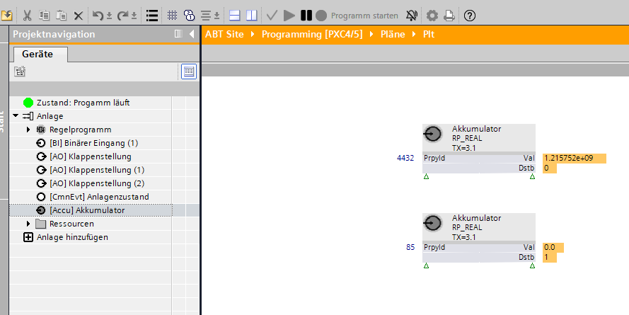

累加器 (Accu)
对象类型累加器 (Accu) 包括外部可见的仪表功能的 BACnet 属性。
“名称”、“描述”和“命名扩展”之间存在依赖关系。对其中一项属性的任何更改都会影响其他两项属性。
笔记：
通过输入项目特定的文本可以消除依赖性。
例子：
如果选择“Aceg”作为预配置的“描述”“有功能量”，则“Aceg”设置为“名称”。除了“命名扩展”之外，输入“01”（项目特定文本）会生成“名称”“Aceg(01)”。该名称还构成对象名称的最后一个元素。
Name |
|
|
|---|---|---|
'Name' 是特定于实例的名称。它用于设置层次对象名称。 | ||
财产ID：4438 | ||
Description |
|
|
|---|---|---|
'Description' 描述了一个 BACnet 对象。 “描述”是一个可翻译的字符串，在内部保存为文本引用或直接保存为字符串。 | ||
财产ID：28 | ||
Name extension |
|
|
|---|---|---|
'Name extension' 是名称的可选扩展名。它唯一地标识一个对象或区分对象。 | ||
财产ID：4437 | ||
Note
文本目录中的名称也可用于“命名扩展”。
Present value |
|
|
|---|---|---|
'Present value' 表示虚拟变量的当前值。 | ||
财产ID：85 | ||
Present value truncated |
|
|
|---|---|---|
'Present value truncated' 源自“当前值”，用于描述“当前值”的低 32 位（64 位，无符号）。控制程序使用“当前值截断”来计算精确的消耗增量，例如以确定当前体积流量或当前电功率。 | ||
财产ID：4432 | ||
Present value scaled |
|
|
|---|---|---|
'Present value scaled' 源自“当前值”，并根据“比例”属性有损转换为 32 位实际值。 | ||
财产ID：4433 | ||
Change of value, COV ✳ |
|
|
|---|---|---|
'Change of value, COV' 指定 ' 的最小变化Present value' 属性将导致向该对象的值更改订阅者发出 COV 通知。 | ||
财产ID：22 | ||
Tracking value |
|
|
|---|---|---|
'Tracking value' 表示从测量设备读取的当前转换值，或由实际控制器计数的累积和转换脉冲。
| ||
财产ID：5107 | ||
Reliability |
|
|
|---|---|---|
'Reliability'表示是否属性值'Present value'是可靠的。如果“当前值”不可靠，则“可靠性”属性指示故障原因，并且状态指示的“故障”位设置为“真”。在正常情况下，“可靠性”属性设置为“无故障”。 | ||
如果当前日期超出指定的开始和结束日期范围，则调度程序不处于活动状态（例如，当前值 = 调度程序处于活动状态时的最后一个值）。 | ||
Suppress fault monitoring |
|
|
|---|---|---|
'Suppress fault monitoring' 确定是否抑制故障监控（故障事件）（“是”/“否”）。设置“是”会抑制“可靠性”的评估，并且“可靠性”的值保持为“无故障”。 | ||
财产ID：357 | ||
Event state |
|
|
|---|---|---|
"Event state“提供了一种方法来确定该对象是否具有与其关联的活动事件状态。”Event state”属性表示对象的事件状态。“中的变化Event state" 值为 FAULT 的属性被视为故障事件。如果对象不支持内部报告，则该属性的值为 NORMAL。 | ||
财产-ID：36 | ||
Units |
|
|
|---|---|---|
'Units'显示'的物理单位Present value' 如果乘以“Scale”中的缩放因子。 | ||
财产ID：117 | ||
Prescale |
|
|
|---|---|---|
'Prescale' 定义用于转换网络外围设备提供的测量值或控制器在“跟踪值”中计数并显示在“当前值”下的累积脉冲的系数。 | ||
财产ID：185 | ||
Scale |
|
|
|---|---|---|
'Scale定义用于乘以“当前值”以接收“单位”中所示的技术单位测量值的换算系数。 | ||
财产ID：187 | ||
“比例”属性可以选择浮动比例和整数比例。
- "Float Scale" is a flexible variable floating point that does not allow for lossless depiction.
- "Integer Scale" is a whole number that does allow for lossless depiction and editing.
可以为每个选项手动输入值。
Signal type |
|
|
|---|---|---|
'Signal type' 定义其 I/O 通道的信号类型。可用的信号类型取决于特定的硬件，例如I/O 模块类型或板载-I/O 类型。 | ||
财产ID：4968 | ||
选中预配置信号的复选框（机械触点 (10/25 Hz)、电触点 (100 Hz)）。
Set value |
|
|
|---|---|---|
'Set value' 修改'当前值'。 | ||
财产ID：191 | ||
Value before correction |
|
|
|---|---|---|
'Value before correction' 表示上次对“设置值”进行写入操作之前的“当前值”。 | ||
财产ID：190 | ||
Last update time |
|
|
|---|---|---|
'Last update time' 表示“当前值”最后一次更改的日期和时间。 | ||
财产ID：4782 | ||
Change time stamp |
|
|
|---|---|---|
'Change time stamp' 表示由于“设置值”的写入操作而上次修改“当前值”的日期和时间。 | ||
财产ID：192 | ||
趋势是一个单独的 BACnet 对象（Trendlog 对象）。然而，它在 ABT 站点和编程编辑器中并未描述为单独的 BACnet 对象，而是描述为 BACnet 对象的趋势函数。
启用趋势 |
|
|
|---|---|---|
“启用趋势”启用趋势功能。类型为 TRENDLOG 的新 BACnet 对象被实例化，自动连接到所选对象的属性“当前值”，并且设置所需的 BACnet 属性显示在“属性”选项卡中。 | ||
Enable logging |
|
|
|---|---|---|
'Enable logging' 启用趋势记录。数据点的记录从开始日期和到达开始时间开始。 如果达到停止日期和停止时间或缓冲区已满（如果已设置），趋势记录就会停止。 默认情况下未定义开始日期和开始时间（通配符）。换句话说，设置“启用日志记录”=“是”会立即开始趋势分析。 | ||
财产ID：133 | ||
Logging Type |
|
|
|---|---|---|
'Logging Type' 确定何时对数据点进行趋势分析。 | ||
财产ID：197 | ||
Logging interval |
|
|
|---|---|---|
'Logging interval' 确定记录值的时间间隔（周期）。通过将“日志记录类型”设置为“轮询”，该设置才会生效。 | ||
财产ID：134 | ||
Start time |
|
|
|---|---|---|
'Start time' 确定开始趋势记录的日期和时间。 | ||
财产ID：142 | ||
Stop time |
|
|
|---|---|---|
'Stop time' 确定结束趋势记录的日期和时间。 | ||
财产ID：143 | ||
Stop when full |
|
|
|---|---|---|
'Stop when full' 确定缓冲区已满时是否停止趋势记录。 | ||
财产ID：144 | ||
设置“通知阈值”可以确定何时检索数据的事件，例如by Desigo CC 在缓冲区变满之前触发。
Buffer size |
|
|
|---|---|---|
'Buffer size' 确定可以保存到缓冲区的最大值数。设置“如果已满则停止”确定缓冲区已满时如何继续。 Note 属性“缓冲区大小”的值必须大于或等于属性“通知阈值”的值。 | ||
财产ID：126 | ||
Align intervals |
|
|
|---|---|---|
'Align intervals' 确定定期轮询间隔是否在特定秒、分钟、小时或天的开始处对齐。该设置对于“日志记录类型”=“COV”没有影响。 这确保了可以同时保存并比较多个同时发生的趋势日志中的值。 只能对秒、分钟、小时或天的整数倍 (1…x) 进行对齐。 | ||
财产ID：193 | ||
Interval offset |
|
|
|---|---|---|
'Interval offset”，以百分之一秒为单位测量，允许循环趋势日志展开。 对于大量活动趋势日志，这可以防止同时轮询所有值的情况。投票可以通过分组进行细分。 'Interval offset' 仅当设置“对齐间隔”=“是”时才处于活动状态。 | ||
财产ID：195 | ||
编程编辑器没有用于累加器对象的特殊功能块。累加器对象必须与读取属性功能块一起使用才能访问“当前值截断”。
Instantiation of the accumulator object in programming editor
累加器对象可以添加到 ABT 站点的 I/O 配置中，并且可以通过将读取属性功能块拖到编程编辑器来显示。
Property 'Present value' and 'Present value truncated'
该功能块无法读取“当前值”（属性 ID 85），因为它是 64 位（Dstb = 1）。属性“当前值被截断”（属性 ID 4432）源自“当前值”并被缩短为 32 位。 “当前值被截断”可以被读取并用作“当前值”的替代。 “当前值被截断”与 ABT 站点中的值相同。
